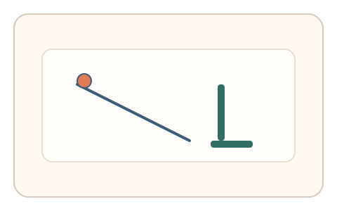
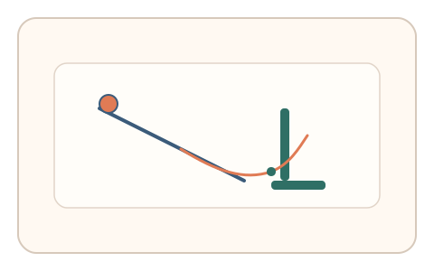
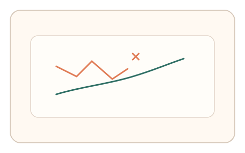

#27
视觉思考范式：空间/结构/直觉
已扩展
视觉因果路径
让用户描绘直觉物理轨迹，依据惯性与转折自然度验证真实性。
概念原文
展示简单物理场景（球、斜坡、挡板），让用户用鼠标描绘运动轨迹；系统评估轨迹的惯性与转折自然度。
用“直觉物理轨迹”作为认知特征，而非图形问答。
研究背景
人类对物体运动存在直觉物理预期，如惯性延续、平滑转折与碰撞反弹。将该直觉转化为绘制轨迹任务，可得到相对稳定且难以精确伪造的运动路径特征。
核心机制
- 展示简单物理场景（球、斜坡、挡板）。
- 用户用鼠标描绘物体运动轨迹。
- 记录轨迹曲率、速度变化与转折角度。
- 评估轨迹与直觉物理模型的一致度。
用户流程
- 步骤 1：用户看到物理场景与起点。
- 步骤 2：用户描绘物体可能的运动轨迹。
- 步骤 3：系统分析轨迹特征并判定。
判定信号
轨迹曲率与转折平滑度
真实直觉轨迹通常连续平滑而非突变折线。
碰撞点后的反弹角与惯性延续
符合直觉物理的反弹角度与方向具有规律性。
判定逻辑
评估轨迹的平滑度、转折角与反弹方向是否符合直觉物理范围；过度理想化或完全随机化判异常。
对抗面
- 脚本调用物理引擎生成轨迹
- 重放真实用户绘制路径
防御与缓解
- 随机化坡度、挡板位置与摩擦参数
- 引入轻微扰动与多场景组合提高伪造成本
- 叠加速度曲线与停顿分布进行多信号验证
可达性与风险
提供点击选择路径的替代模式，避免对精细绘制能力受限用户造成障碍。
- 不同文化与物理经验差异导致轨迹偏差
- 触控设备绘制精度影响信号稳定性
可视化状态

状态 1：物理场景
球体与斜坡构成直觉物理任务。

状态 2：轨迹描绘
用户描绘可能的运动路径。

状态 3：路径判定
评估平滑度与反弹角度。
参考资料
Naive physics
说明人类直觉物理的认知基础。
Projectile motion
说明常见运动轨迹的物理规律。